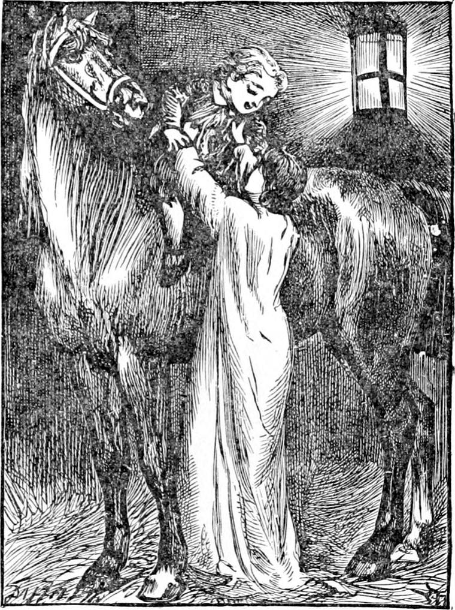
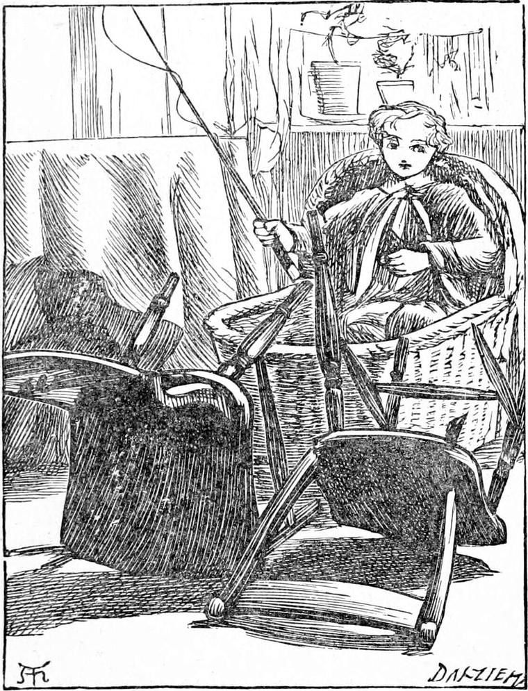
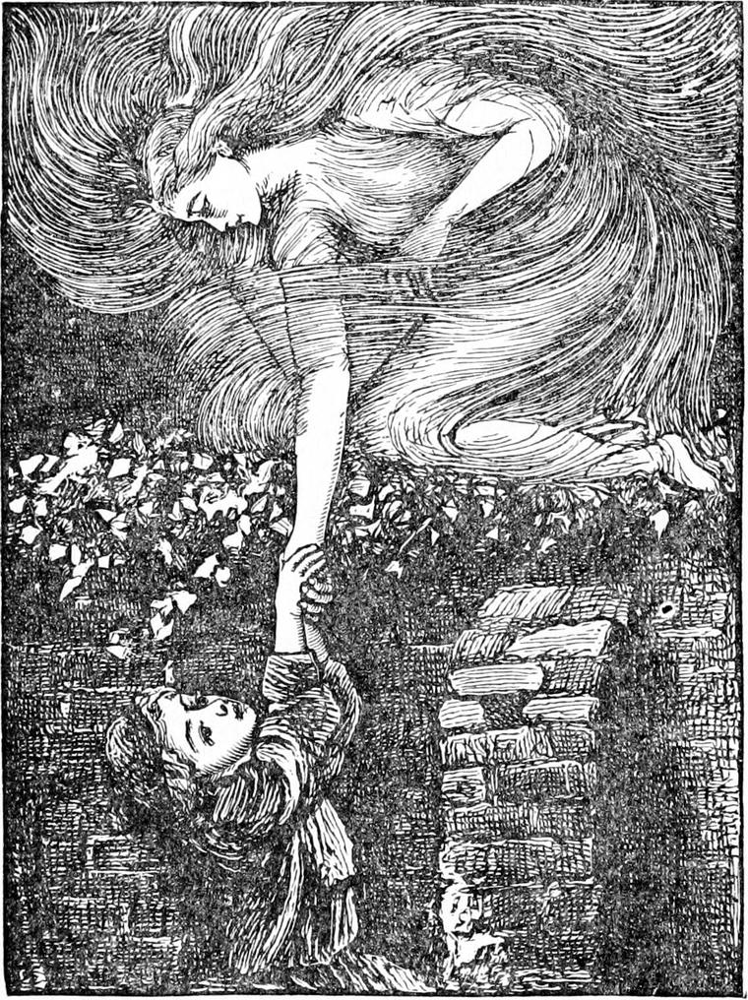
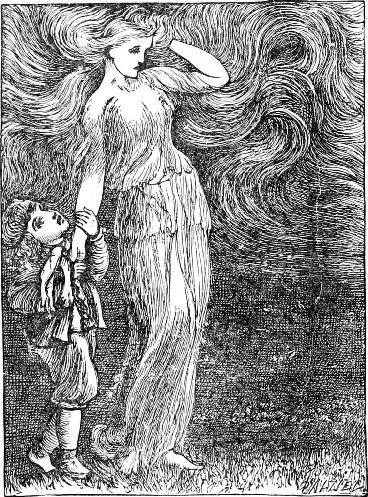

DIAMOND woke very early in the morning, and thought what a curious dream he had had. But the memory grew brighter and brighter in his head, until it did not look altogether like a dream, and he began to doubt whether he had not really been abroad in the wind last night. He came to the conclusion that, if he had really been brought home to his mother by Mrs. Crump, she would say something to him about it, and that would settle the matter. Then he got up and dressed himself, but, finding that his father and mother were not yet stirring, he went down the ladder to the stable. There he found that even old Diamond was not awake yet, for he, as well as young Diamond, always got up the moment he woke, and now he was lying as flat as a horse could lie upon his nice trim bed of straw.
“I'll give old Diamond a surprise,” thought the boy; and creeping up very softly, before the horse knew, he was astride of his back. Then it was young Diamond's turn to have more of a surprise than he had expected; for as with an earthquake, with a rumbling and a rocking hither and thither, a sprawling of legs and heaving as of many backs, young Diamond found himself hoisted up in the air, with both hands twisted in the horse's mane. The next instant old Diamond lashed out with both his hind legs, and giving one cry of terror young Diamond found himself lying on his neck, with his arms as far round it as they would go. But then the horse stood as still as a stone, except that he lifted his head gently up to let the boy slip down to his back. For when he heard young Diamond's cry he knew that there was nothing to kick about; for young Diamond was a good boy, and old Diamond was a good horse, and the one was all right on the back of the other.
As soon as Diamond had got himself comfortable on the saddle place, the horse began pulling at the hay, and the boy began thinking. He had never mounted Diamond himself before, and he had never got off him without being lifted down. So he sat, while the horse ate, wondering how he was to reach the ground.
But while he meditated, his mother woke, and her first thought was to see her boy. She had visited him twice during the night, and found him sleeping quietly. Now his bed was empty, and she was frightened.
“Diamond! Diamond! Where are you, Diamond?” she called out.
Diamond turned his head where he sat like a knight on his steed in enchanted stall, and cried aloud,—
“Here, mother!”
“Where, Diamond?” she returned.
“Here, mother, on Diamond's back.”
She came running to the ladder, and peeping down, saw him aloft on the great horse.
“Come down, Diamond,” she said.
“I can't,” answered Diamond.
“How did you get up?” asked his mother.

“Quite easily,” answered he; “but when I got up, Diamond would get up too, and so here I am.”
His mother thought he had been walking in his sleep again, and hurried down the ladder. She did not much like going up to the horse, for she had not been used to horses; but she would have gone into a lion's den, not to say a horse's stall, to help her boy. So she went and lifted him off Diamond's back, and felt braver all her life after. She carried him in her arms up to her room; but, afraid of frightening him at his own sleep-walking, as she supposed it, said nothing about last night. Before the next day was over, Diamond had almost concluded the whole adventure a dream.
For a week his mother watched him very carefully—going into the loft several times a night—as often, in fact, as she woke. Every time she found him fast asleep.
All that week it was hard weather. The grass showed white in the morning with the hoar-frost which clung like tiny comfits to every blade. And as Diamond's shoes were not good, and his mother had not quite saved up enough money to get him the new pair she so much wanted for him, she would not let him run out. He played all his games over and over indoors, especially that of driving two chairs harnessed to the baby's cradle; and if they did not go very fast, they went as fast as could be expected of the best chairs in the world, although one of them had only three legs, and the other only half a back.

At length his mother brought home his new shoes, and no sooner did she find they fitted him than she told him he might run out in the yard and amuse himself for an hour.
The sun was going down when he flew from the door like a bird from its cage. All the world was new to him. A great fire of sunset burned on the top of the gate that led from the stables to the house; above the fire in the sky lay a large lake of green light, above that a golden cloud, and over that the blue of the wintry heavens. And Diamond thought that, next to his own home, he had never seen any place he would like so much to live in as that sky. For it is not fine things that make home a nice place, but your mother and your father.
As he was looking at the lovely colours, the gates were thrown open, and there was old Diamond and his friend in the carriage, dancing with impatience to get at their stalls and their oats. And in they came. Diamond was not in the least afraid of his father driving over him, but, careful not to spoil the grand show he made with his fine horses and his multitudinous cape, with a red edge to every fold, he slipped out of the way and let him dash right on to the stables. To be quite safe he had to step into the recess of the door that led from the yard to the shrubbery.
As he stood there he remembered how the wind had driven him to this same spot on the night of his dream. And once more he was almost sure that it was no dream. At all events, he would go in and see whether things looked at all now as they did then. He opened the door, and passed through the little belt of shrubbery. Not a flower was to be seen in the beds on the lawn. Even the brave old chrysanthemums and Christmas roses had passed away before the frost. What? Yes! There was one! He ran and knelt down to look at it.
It was a primrose—a dwarfish thing, but perfect in shape—a baby-wonder. As he stooped his face to see it close, a little wind began to blow, and two or three long leaves that stood up behind the flower shook and waved and quivered, but the primrose lay still in the green hollow, looking up at the sky, and not seeming to know that the wind was blowing at all. It was just a one eye that the dull black wintry earth had opened to look at the sky with. All at once Diamond thought it was saying its prayers, and he ought not to be staring at it so. He ran to the stable to see his father make Diamond's bed. Then his father took him in his arms, carried him up the ladder, and set him down at the table where they were going to have their tea.
“Miss is very poorly,” said Diamond's father. “Mis'ess has been to the doctor with her to-day, and she looked very glum when she came out again. I was a-watching of them to see what doctor had said.”
“And didn't Miss look glum too?” asked his mother.
“Not half as glum as Mis'ess,” returned the coachman. “You see—”
But he lowered his voice, and Diamond could not make out more than a word here and there. For Diamond's father was not only one of the finest of coachmen to look at, and one of the best of drivers, but one of the most discreet of servants as well. Therefore he did not talk about family affairs to any one but his wife, whom he had proved better than himself long ago, and was careful that even Diamond should hear nothing he could repeat again concerning master and his family.
It was bed-time soon, and Diamond went to bed and fell fast asleep.
He awoke all at once, in the dark.
“Open the window, Diamond,” said a voice.
Now Diamond's mother had once more pasted up North Wind's window.
“Are you North Wind?” said Diamond: “I don't hear you blowing.”
“No; but you hear me talking. Open the window, for I haven't overmuch time.”
“Yes,” returned Diamond. “But, please, North Wind, where's the use? You left me all alone last time.”
He had got up on his knees, and was busy with his nails once more at the paper over the hole in the wall. For now that North Wind spoke again, he remembered all that had taken place before as distinctly as if it had happened only last night.
“Yes, but that was your fault,” returned North Wind. “I had work to do; and, besides, a gentleman should never keep a lady waiting.”
“But I'm not a gentleman,” said Diamond, scratching away at the paper.
“I hope you won't say so ten years after this.”
“I'm going to be a coachman, and a coachman is not a gentleman,” persisted Diamond.
“We call your father a gentleman in our house,” said North Wind.
“He doesn't call himself one,” said Diamond.
“That's of no consequence: every man ought to be a gentleman, and your father is one.”
Diamond was so pleased to hear this that he scratched at the paper like ten mice, and getting hold of the edge of it, tore it off. The next instant a young girl glided across the bed, and stood upon the floor.
“Oh dear!” said Diamond, quite dismayed; “I didn't know—who are you, please?”
“I'm North Wind.”
“Are you really?”
“Yes. Make haste.”
“But you're no bigger than me.”
“Do you think I care about how big or how little I am? Didn't you see me this evening? I was less then.”
“No. Where was you?”
“Behind the leaves of the primrose. Didn't you see them blowing?”
“Yes.”
“Make haste, then, if you want to go with me.”
“But you are not big enough to take care of me. I think you are only Miss North Wind.”
“I am big enough to show you the way, anyhow. But if you won't come, why, you must stay.”
“I must dress myself. I didn't mind with a grown lady, but I couldn't go with a little girl in my night-gown.”
“Very well. I'm not in such a hurry as I was the other night. Dress as fast as you can, and I'll go and shake the primrose leaves till you come.”
“Don't hurt it,” said Diamond.
North Wind broke out in a little laugh like the breaking of silver bubbles, and was gone in a moment. Diamond saw—for it was a starlit night, and the mass of hay was at a low ebb now—the gleam of something vanishing down the stair, and, springing out of bed, dressed himself as fast as ever he could. Then he crept out into the yard, through the door in the wall, and away to the primrose. Behind it stood North Wind, leaning over it, and looking at the flower as if she had been its mother.
“Come along,” she said, jumping up and holding out her hand.
Diamond took her hand. It was cold, but so pleasant and full of life, it was better than warm. She led him across the garden. With one bound she was on the top of the wall. Diamond was left at the foot.
“Stop, stop!” he cried. “Please, I can't jump like that.”
“You don't try,” said North Wind, who from the top looked down a foot taller than before.
“Give me your hand again, and I will, try” said Diamond.
She reached down, Diamond laid hold of her hand, gave a great spring, and stood beside her.
“This is nice!” he said.
Another bound, and they stood in the road by the river. It was full tide, and the stars were shining clear in its depths, for it lay still, waiting for the turn to run down again to the sea. They walked along its side. But they had not walked far before its surface was covered with ripples, and the stars had vanished from its bosom.
And North Wind was now tall as a full-grown girl. Her hair was flying about her head, and the wind was blowing a breeze down the river. But she turned aside and went up a narrow lane, and as she went her hair fell down around her.

“I have some rather disagreeable work to do to-night,” she said, “before I get out to sea, and I must set about it at once. The disagreeable work must be looked after first.”
So saying, she laid hold of Diamond and began to run, gliding along faster and faster. Diamond kept up with her as well as he could. She made many turnings and windings, apparently because it was not quite easy to get him over walls and houses. Once they ran through a hall where they found back and front doors open. At the foot of the stair North Wind stood still, and Diamond, hearing a great growl, started in terror, and there, instead of North Wind, was a huge wolf by his side. He let go his hold in dismay, and the wolf bounded up the stair. The windows of the house rattled and shook as if guns were firing, and the sound of a great fall came from above. Diamond stood with white face staring up at the landing.
“Surely,” he thought, “North Wind can't be eating one of the children!” Coming to himself all at once, he rushed after her with his little fist clenched. There were ladies in long trains going up and down the stairs, and gentlemen in white neckties attending on them, who stared at him, but none of them were of the people of the house, and they said nothing. Before he reached the head of the stair, however, North Wind met him, took him by the hand, and hurried down and out of the house.
“I hope you haven't eaten a baby, North Wind!” said Diamond, very solemnly.
North Wind laughed merrily, and went tripping on faster. Her grassy robe swept and swirled about her steps, and wherever it passed over withered leaves, they went fleeing and whirling in spirals, and running on their edges like wheels, all about her feet.
“No,” she said at last, “I did not eat a baby. You would not have had to ask that foolish question if you had not let go your hold of me. You would have seen how I served a nurse that was calling a child bad names, and telling her she was wicked. She had been drinking. I saw an ugly gin bottle in a cupboard.”
“And you frightened her?” said Diamond.
“I believe so!” answered North Wind laughing merrily. “I flew at her throat, and she tumbled over on the floor with such a crash that they ran in. She'll be turned away to-morrow—and quite time, if they knew as much as I do.”

“But didn't you frighten the little one?”
“She never saw me. The woman would not have seen me either if she had not been wicked.”
“Oh!” said Diamond, dubiously.
“Why should you see things,” returned North Wind, “that you wouldn't understand or know what to do with? Good people see good things; bad people, bad things.”
“Then are you a bad thing?”
“No. For you see me, Diamond, dear,” said the girl, and she looked down at him, and Diamond saw the loving eyes of the great lady beaming from the depths of her falling hair.
“I had to make myself look like a bad thing before she could see me. If I had put on any other shape than a wolf's she would not have seen me, for that is what is growing to be her own shape inside of her.”
“I don't know what you mean,” said Diamond, “but I suppose it's all right.”
They were now climbing the slope of a grassy ascent. It was Primrose Hill, in fact, although Diamond had never heard of it. The moment they reached the top, North Wind stood and turned her face towards London. The stars were still shining clear and cold overhead. There was not a cloud to be seen. The air was sharp, but Diamond did not find it cold.
“Now,” said the lady, “whatever you do, do not let my hand go. I might have lost you the last time, only I was not in a hurry then: now I am in a hurry.”
Yet she stood still for a moment.